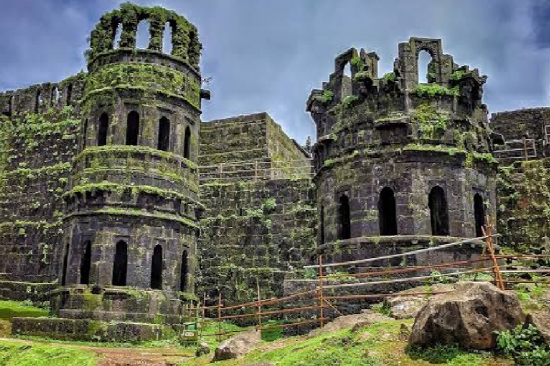
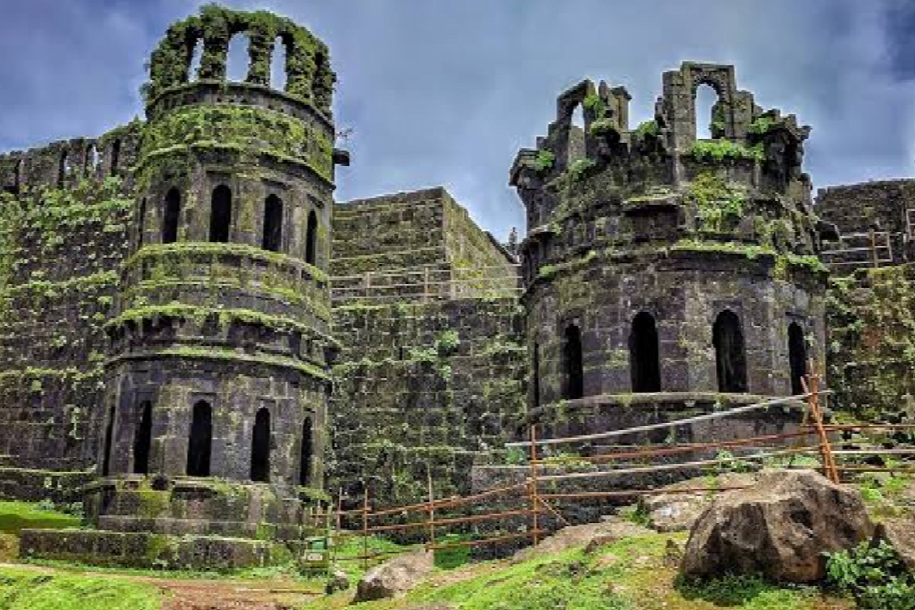

Located in the Sahyadri Mountains, Sinhagad Fort is an ancient fortress known for its historical significance and architecture. It was once known as Kondhana and has witnessed a number of battles; one notable battle being the 1670 Battle of Sinhagad. The name, “Sinhagad”, literally means Lion’s Fort signifying its strength and brilliance. Today, the structure is a perfect landmark for trekkers as it is located at a height of over 750 metres in the Sahyadri Mountains. In fact, the fort is strategically built right in the centre of the line of Maratha forts built in the Sahyadris. Some of these citadels are the Rajgad Fort, Torna Fort and the Purandar Fort. The place is also famous among photographers and nature lovers.
Sinhagad Fort and its surroundings mostly provide a good environment for a quick getaway. People living nearby often head to the attraction over the weekend. Back in the time, renowned personalities like Bal Gangadhar Tilak, Mahatma Gandhi have also visited the fort for meetings and holidays. The mountain also serves as a great location for training of the National Defence Academy Students. They hike up the hill till the fort in complete battle gear. Due to its historical and cultural significance, there are restrictions on partying, cooking/ consuming non-vegetarian food, alcohol etc. Nonetheless, one is bound to have a great time if they avoid these activities and soak in the dilapidated yet striking structure and the scenic surroundings.


 
